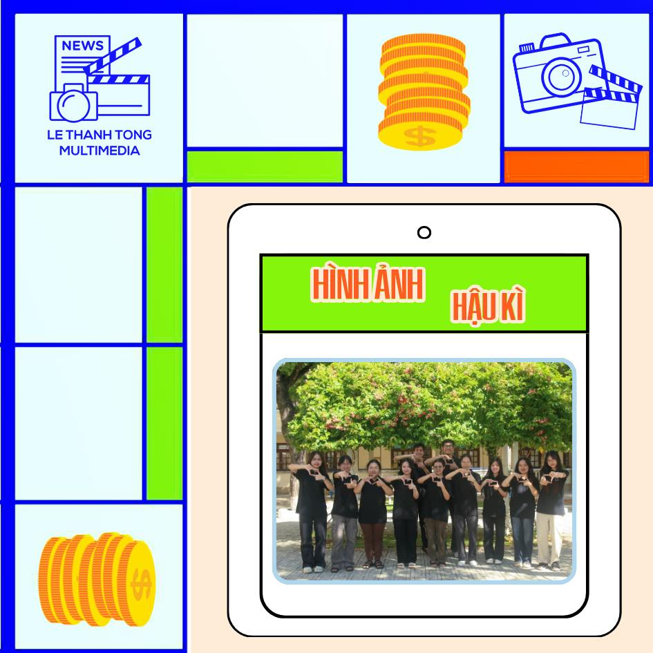
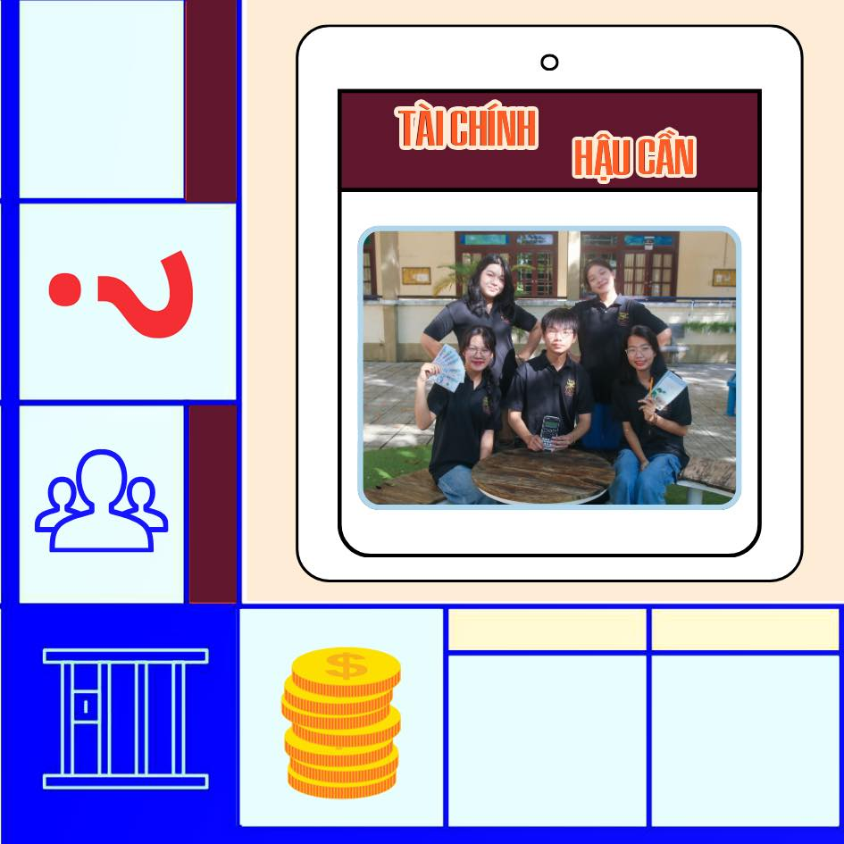
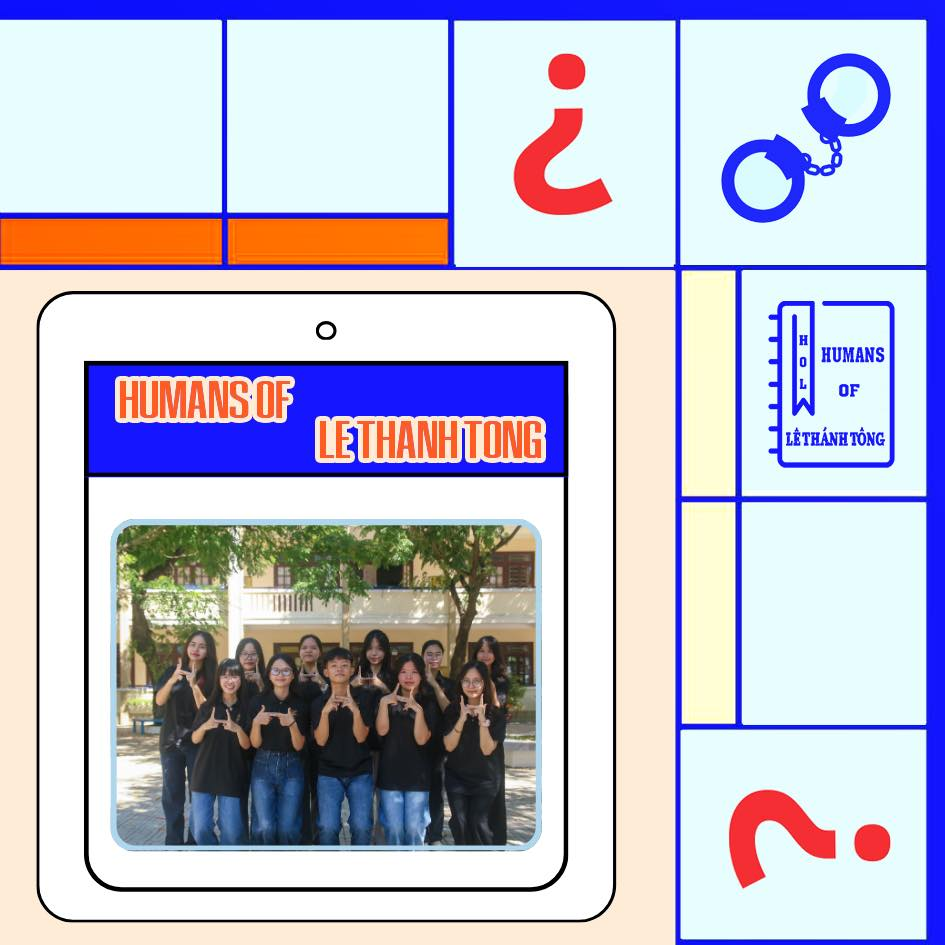
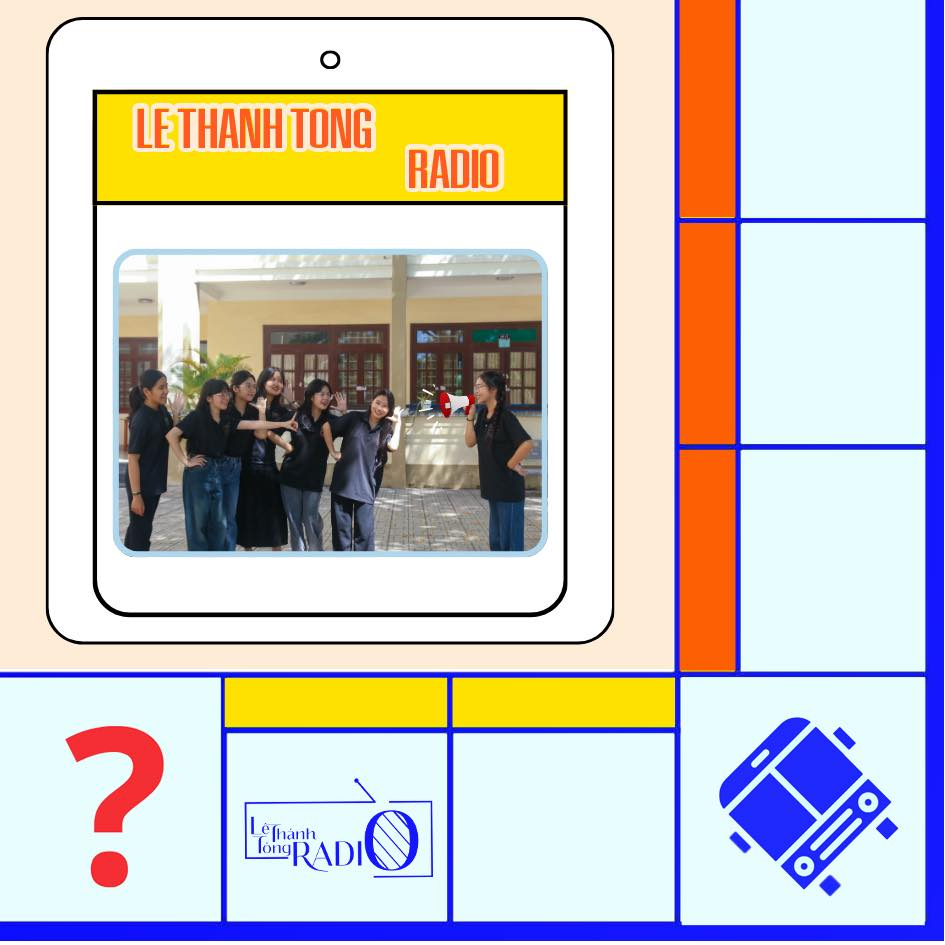

|
|
|  |
Ban Hình ảnh- Hậu kì
- Có kĩ năng sử dụng thành thạo máy ảnh, điện thoại và các thiết bị quay chụp khác.
- Hiểu biết về các phần mềm chinh sửa ảnh và video như Canva, Adobe Photoshop, Adobe Lightroom, Adobe Premiere, Adobe Illusrator, có khả năng chạy deadline, chịu áp lực và chịu trách nhiệm trong công việc.
- Có thẫm mỹ tốt, đam mê nghệ thuật, sáng tạo. Cần cù, tỉ mỉ. Đảm bảo online thường xuyên.
- Được làm việc trong môi trường chuyên nghiệp, tham gia bonding, gặp gỡ nhiều đối tượng khóc nhau: Thầy cô, các anh chị khoá trên.
- Tham gia training: Trau dồi các kỹ năng design, chụp ảnh và khả năng tư duy, sáng tạo.
- Nhận được giấy chứng nhận từ Đoàn trường sau khi hoàn thành tốt công việc.
- Thiết kế các ấn phẩm truyền thông như hình ảnh, poster, video.. phục vụ cho mục đích truyền thông của đoàn trường và CLB.
- Lên ý tưởng, concept, thiết kế ấn phẩm cho các bài đăng trên page.
- Phối hợp với các ban khác để định hướng, hoàn thiện cho hình ảnh truyền thông của CLB.
|
Ban Tài chính Hậu cần
- Lên kế hoạch cho các sự kiện, bonding của câu lạc bộ.
- Xử lí các công việc hậu cần cho các sự kiện.
- Quản lí tài chính.
- Nhắc nhở các bạn hoàn thành đúng thời hạn deadline.
- Có khả năng chạy deadline, chịu áp lực và chịu trách nhiệm trong công việc.
- Cẩn thận, tỉ mỉ, có khả năng quản lí tài chính tốt.
- Linh động trong công việc, khi cần thiết có thể đưa ra các phương án ứng phó.
- Hòa đồng, có khả năng giao tiếp tốt trong môi trường làm việc nhóm và nghiêm túc với công việc được giao.
- Trau đồi kỹ năng quản lí công việc, quản lí thời gian, tài chính.
- Rèn luyện kĩ năng mềm, phát triển bản thân. Tham gia các buổi training nâng cao kỹ năng. Mở rộng mối quan hệ.
- Nhận được giấy chứng nhận từ Đoàn trường sau khi hoàn thành tốt công việc.
|
 |
|  |
Humans of Le Thanh Tong
- Xây dựng content cho các hoạt động của trường cũng như CLB.
- Quảng bá, truyền tải thông điệp về con người ở Chuyên.
- Khai thác các đề tài tự do trong phạm vi nhà trường.
- Có khả năng viết lách và lên ý tưởng cho các bài đăng. Tự tin, sáng tạo trong viết lách là một lợi thế.
- Chăm chỉ, có trách nhiệm với nhiệm vụ được giao.
- Hoà đồng, có khả năng làm việc nhóm.
- Biết edit ảnh và video là một lợi thế.
- Có quỹ thời gian ổn định, phù hợp với công việc.
- Rèn luyện năng lực giao tiếp, hoạt động trong một tập thể năng động, thân thiện, chuyên nghiệp. Mở rộng các mối quan hệ.
- Được học tập và nâng cao các kỹ năng mềm, phát triển bản thân. Tham gia các buổi training, workshop...
- Xây dựng nền tảng vững vàng trước khi bước chân vào môi trường đại học.
- Nhận được giấy chứng nhận từ Đoàn trường sau khi hoàn thành tốt công việc.
|
Le Thanh Tong Radio
- Khai thác, gắn kết và lan toả những tình cảm, tâm sự của thành viên nhà trường.
- Xây dựng và biên tập bài viết cho các hoạt động của trường cũng như của CLB.
- Thực hành sáng tạo và lên ý tưởng phát thanh, phát triển page con, cộng tác MC cùng Đoàn trường và các CLB khác.
- Có khả năng viết lách và lên ý tưởng tốt.
- Chất giọng tốt, truyền cảm hứng là một lợi thế.
- Cần củ, chăm chỉ, có trách nhiệm với công việc được giao.
- Có khả năng sắp xếp công việc, quản lí thời gian tốt.
- Năng động, sáng tạo, nhiệt huyết với công việc và các hoạt động của team cũng như CLB.
- Kỹ năng teamwork và xử lí tình huống linh hoạt.
- Được làm việc trong môi trường năng động, chuyên nghiệp. Trực tiếp học hỏi kinh nghiệm từ bạn bè và cóc anh chị đi trước.
- Rèn luyện các kỹ năng mềm, phát triển bản thân. Tham gia các buổi training nâng cao kỹ năng. Mở rộng mối quan hệ.
- Nhận được giấy chứng nhận từ Đoàn trường sau khi hoàn thành tốt công việc.
|
 |